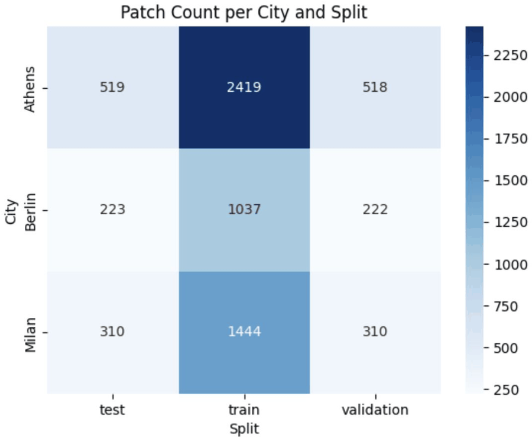
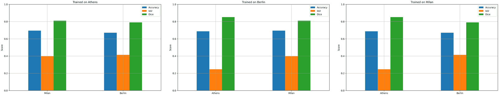
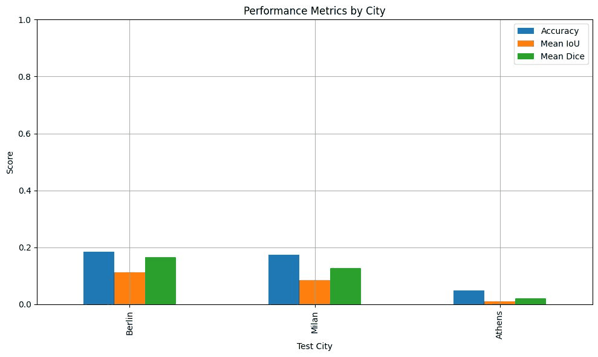
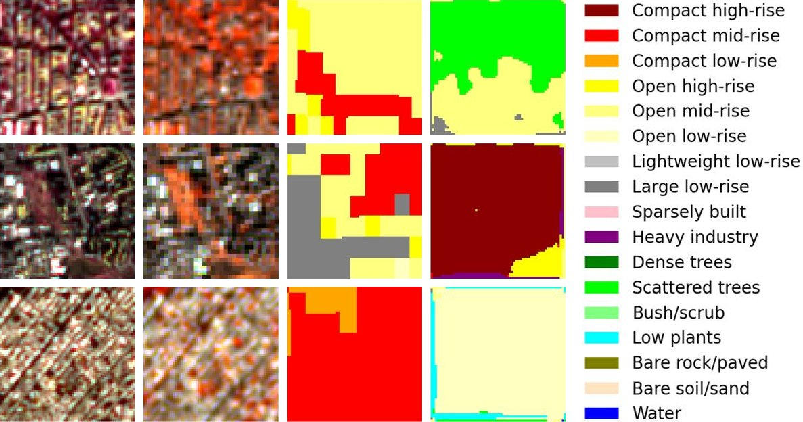
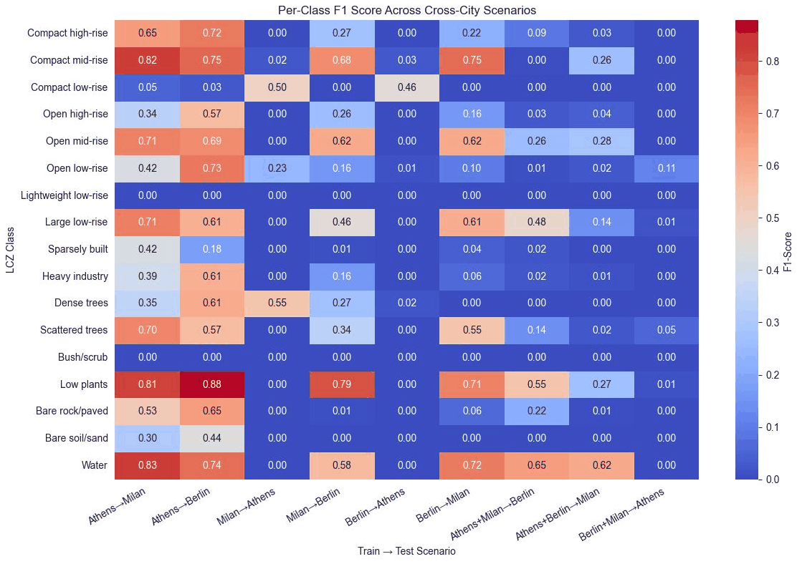
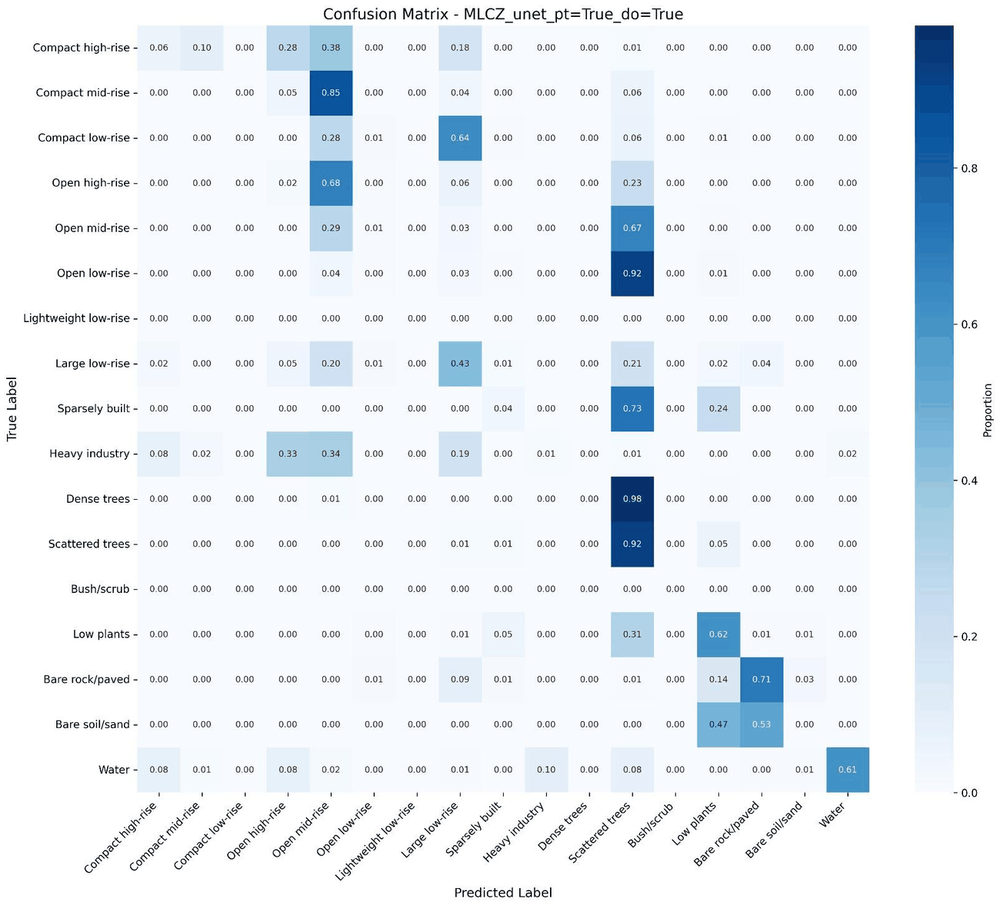

Erasmus+ BIP “Machine Learning for Earth Observation Data Processing and Fusion”, Pavia, June 2025
Mapping Local Climate Zones in European Cities
A U-Net assigns every 10 m pixel of Berlin, Milan and Athens one of the 17 Local Climate Zones, using 10 Sentinel-2 bands and 234 PRISMA hyperspectral bands.
Our team project as Group 2: Sona, Sohane, Pegah, Mahila, Samy and me, Konrad Kloska. I wrote most of the code and extended it after the course.
View the city maps Code on GitHub
- Cities
- 3
- Input channels
- 244
- Patches of 64 × 64 pixels
- 7002
- LCZ classes
- 17
Why Local Climate Zones
Local Climate Zones (LCZ) classify urban and natural landscapes by their surface cover, structure and thermal properties (Stewart and Oke, 2012). The scheme has 17 standard classes: ten built types and seven land cover types. Because the zones are defined the same way everywhere, maps of different cities can be compared directly.
What the maps are used for
- Finding areas that are vulnerable to heat
- Climate adaptation and urban resilience
- Urban planning and zoning
- Input for urban microclimate models
Why it is hard
- Cities mix buildings, roads and green areas at small scales
- Boundaries between zones are often unclear in satellite images
- Lighting and shadows change how buildings look
- Little ground truth exists across cities
Why satellite data
- Wide and repeated coverage
- Multispectral and hyperspectral bands reveal surface materials
- Different cities are observed in the same way
Built types
- 1 Compact high-rise
- 2 Compact mid-rise
- 3 Compact low-rise
- 4 Open high-rise
- 5 Open mid-rise
- 6 Open low-rise
- 7 Lightweight low-rise
- 8 Large low-rise
- 9 Sparsely built
- 10 Heavy industry
Land cover types
- A Dense trees
- B Scattered trees
- C Bush, scrub
- D Low plants
- E Bare rock or paved
- F Bare soil or sand
- G Water
The colours are the ones used in the maps on this page.
Data
For each city there are three rasters: Sentinel-2, PRISMA and the labels. They are aligned to the Sentinel-2 grid at 10 m, and the two images are stacked into 244 channels.
Sentinel-2
Multispectral, ESA Copernicus
13 bands from visible to shortwave infrared at 10 to 60 m, a new image every 5 days. Good for vegetation, water and built-up areas.
Used: 10 bands, B2 to B8A, B11 and B12
PRISMA
Hyperspectral, Italian Space Agency
About 240 bands at 30 m. The fine spectral signatures help to tell surface materials apart, such as roofs, pavement and bare soil. Scenes are taken less often than with Sentinel-2.
Used: 234 bands, resampled to 10 m
LCZ Generator
Labels, Demuzere et al. (2021)
LCZ maps at 100 m, produced automatically and available worldwide, but not validated in the field.
Used: resampled to 10 m
From rasters to patches
- Check the projection and resolution of the three rasters and reproject them onto the Sentinel-2 grid where needed.
- Scale Sentinel-2 rasters stored as digital numbers (reflectance × 10000, Berlin and Milan) to reflectance, so all channels lie roughly between 0 and 1.
- Stack the 10 Sentinel-2 and 234 PRISMA bands into 244 channels.
- Cut patches of 64 × 64 pixels (640 m) every 32 pixels and skip patches with missing values or without any labelled pixel.
- Split each city into 70 % training, 15 % validation and 15 % test patches, stratified by the most frequent class of a patch.
- Store the patches in LMDB and their metadata in Parquet.
The labels are imbalanced. Five built types (open low-rise, compact mid-rise, open mid-rise, large low-rise and compact low-rise) make up about 83 % of the labelled pixels, heavy industry 0.6 % and water 0.35 %. This is one reason for the focal loss below.


Method
Model
A U-Net with a ResNet18 encoder from
segmentation_models_pytorch.
The first convolution takes all 244 channels, and the network returns a score for each of the 18 classes
(17 LCZ and “no data”) at every pixel. With --pretrained the encoder starts from
ImageNet weights. A smaller encoder-decoder CNN is included for comparison.
Loss
L = 0.7 · LCE + 0.3 · Lfocal, Lfocal = (1 − pt)γ · LCE, γ = 2
The focal term down-weights pixels the model already classifies with confidence, so rare and difficult classes get more weight. Pixels without a label (class 0) are ignored.
Training setup
| Optimizer | AdamW, learning rate 0.0005, weight decay 0.0001 |
|---|---|
| Schedule | Main model: cosine annealing per epoch; runs of up to 50 epochs: OneCycleLR with 30 % warm-up |
| Epochs | Main model: at most 150, stopped after 132, best checkpoint from epoch 117; presentation and cross-city runs: at most 50 |
| Early stopping | Validation mean IoU, patience 15 |
| Checkpoint | Best validation mean IoU |
| Batch size | 32 |
| Gradient clipping | Norm 1.0 |
| Augmentation | Horizontal and vertical flips, 90° rotations, shift-scale-rotate, brightness and contrast |
| Seed | 42 |
| Tools | PyTorch, PyTorch Lightning, segmentation_models_pytorch, albumentations, Weights & Biases |
Experiments
All cities (main model)
Train for up to 150 epochs on 4900 patches (70 % of each city), stop early on 1050 validation patches and report the scores on the remaining 1052 test patches. This model produces the city maps below.
Single city
Train on one city and test on the other two, once for each city.
Cross-city transfer
Train on two cities and test on the third. This simulates a city for which no labels exist.
Results
City maps of the main model
The main model is the U-Net with ImageNet weights, trained on the training patches of all three cities (see Experiments). Below are Sentinel-2 true color, the LCZ Generator labels, its prediction and the errors for the same area. The maps are stitched from all patches of a city, whether they were used for training, validation or testing. Where patches overlap, the class with the highest summed probability wins.
No exported results yet. The maps and scores are generated from a trained checkpoint.
Run this from the repository root to write docs/results.json and docs/maps/:
python main.py --export --checkpoint path/to/checkpoint.ckptTo look at the page locally, serve the folder instead of opening the file:
python -m http.server 8000 --directory docs, then open
http://localhost:8000.
Scroll or use + and − to zoom, drag to pan, double-click to reset. Point at or tap a map to see the true and the predicted class.
- Correct
- Wrong
- No label
Scores
- Test accuracy
- Test mean IoU
- Patches
- Map size (km)
Per split
| Split | Labelled pixels | Accuracy | Mean IoU |
|---|
Scores per class on the test split
| Class | Pixels | Precision | Recall | F1 | IoU |
|---|
Scores use each patch's own prediction, like the test step of the training, and ignore pixels without a label. Patches overlap by half and the split is random within each city, so test patches share pixels with training patches and the test scores are optimistic. The cross-city results below are the harder test.
Cross-city transfer, June 2025 and now
Train on two cities for up to 50 epochs and test on the third, which the model has never seen. Model, loss and metric code are the same as in June; the data now have the fixed Sentinel-2 scaling and augmentation.
| Test city | Trained on | Accuracy June 2025 | Accuracy now | Mean IoU June 2025 | Mean IoU now |
|---|---|---|---|---|---|
| Berlin | Athens, Milan | 0.185 | 0.233 | 0.107 | 0.093 |
| Milan | Athens, Berlin | 0.157 | 0.352 | 0.071 | 0.095 |
| Athens | Berlin, Milan | 0.156 | 0.120 | 0.026 | 0.048 |
June 2025: our W&B runs from the course, all three made with the same code. Besides the data fixes they differ from the new runs in batch size (96 instead of 32), weight decay (0.01 instead of 0.0001), class weights in the loss and the missing seed, so the table shows where things stand, not what each fix did.
The accuracy is higher on Milan and Berlin and lower on Athens. The mean IoU is higher on Milan and Athens, a little lower on Berlin and below 0.1 everywhere, so the model still gets most classes of an unseen city wrong. The main model scores far higher because every city is part of its training data and its test patches overlap with training patches. Transfer to a city without labels remains the open problem.
Results from the final presentation (June 2025)
We made these figures for our final presentation with the code of June 2025, not with the model above.




Trained on two cities, the model reached an accuracy of 0.18 on Berlin, 0.17 on Milan and 0.05 on Athens, with a mean IoU of 0.11, 0.08 and 0.01. With this setup, the transfer to a city without labels does not work yet. The chart was made with evaluation code that is no longer in the repository, so the W&B test values in the table above differ slightly.
Averaged over the three cross-city runs, most errors go to two classes. Dense trees (46 %), open low-rise (42 %) and open mid-rise (35 %) were predicted as scattered trees; heavy industry (36 %) and compact mid-rise (34 %) as open mid-rise.






Notes on these figures
- In the single-city chart the bars of a test city are identical whichever city the model was trained on, while the per-class F1 values of the same scenarios differ and are close to 0 for Athens. The chart most likely shows one model evaluated city by city rather than three separate single-city runs, which would also explain why it is so much higher than the cross-city results.
- The Dice values cannot be reproduced with the current code, which does not compute Dice, and they do not fit the IoU values next to them: with the same averaging, a mean IoU of 0.25 allows a mean Dice of at most 0.40.
- The two Sentinel-2 columns of the sample figure were labelled true and false color in the presentation. Because of a band index bug that has since been fixed, they show B5/B4/B3 and B8A/B5/B4.
- Lightweight low-rise has no pixels in any of these matrices, so its F1 of 0 says nothing about the model. The Berlin test data contain no bush/scrub either.
- Two data problems affected the June 2025 runs: the Sentinel-2 rasters of Berlin and Milan held digital numbers while the one of Athens held reflectance, and the brightness augmentation clipped the digital numbers to 1, which wiped out the Sentinel-2 bands of about half of the Berlin and Milan training patches. Both are fixed now, see the comparison above.
What worked and what did not
Our own summary at the end of the presentation.
Worked
- Sentinel-2, PRISMA and the LCZ labels were aligned consistently and combined into one dataset.
- Single-city training improved steadily over the course of the project.
- Looking at the maps next to the metrics showed where and how the model fails.
- We divided the work clearly within the team.
Did not work, or not yet
- Performance drops sharply when the test city is not part of the training data.
- Rare classes such as heavy industry or bush/scrub are poorly predicted.
- There was no time to try other architectures, such as transformers or multi-branch CNNs.
- The dataset is small: three cities and about 7000 patches.
- The labels have not been validated in the field.
What I found after the course
- Check the value range of every input in every city. The Sentinel-2 rasters of Berlin and Milan held digital numbers while the one of Athens held reflectance, and the brightness augmentation clipped the digital numbers to 1, which wiped out their Sentinel-2 bands in about half of the training patches. Nothing crashed; the model simply trained on broken inputs.
- The evaluation had bugs of its own: the test report logged zeros as soon as a pixel was predicted as no data, it only covered the first 20 test batches, and the plots used the wrong Sentinel-2 bands. Training was not seeded either, so runs could not be repeated.
- The main model profits from longer training: with 150 instead of 50 epochs, which also switches from OneCycleLR to cosine annealing, the test accuracy rose from 0.706 to 0.735 and the mean IoU from 0.383 to 0.431.
- Next I would bring the rasters of all cities to the same statistics and add more cities to help the transfer, and test the main model on areas that are spatially separated from its training patches, so that its scores are no longer optimistic.
Run it yourself
The rasters are not part of the repository. Place them as
data/<City>/LCZ_Map.tif, PRISMA_30.tif and S2.tif; paths can be
changed in .env. The README has the
details, including the CPU build of PyTorch and how to run single experiments such as cross-city
training.
# Install, PyTorch first (CUDA 12.8 build)
git clone https://github.com/KonradJKl/MLCZ-Pipeline.git
cd MLCZ-Pipeline
pip install torch==2.7.0 torchvision==0.22.0 --index-url https://download.pytorch.org/whl/cu128
pip install -r requirements.txt
# Align the rasters, cut the patches and split them into processed/
python main.py --convert
# Train the main model, checkpoints go to logs/
python modules/experiments.py --arch_name unet --pretrained --epochs 150 --lmdb_path processed/MLCZ.lmdb --metadata_parquet_path processed/MLCZ.parquet
# Or the four comparison runs: U-Net pretrained and from scratch, small CNN with and without dropout
python main.py --train
# Write results.json and the maps for this page into docs/
python main.py --export --checkpoint logs/MLCZ-Pipeline-Server/<run id>/checkpoints/<file>.ckpt
# Local dashboard with the same maps
streamlit run app.py